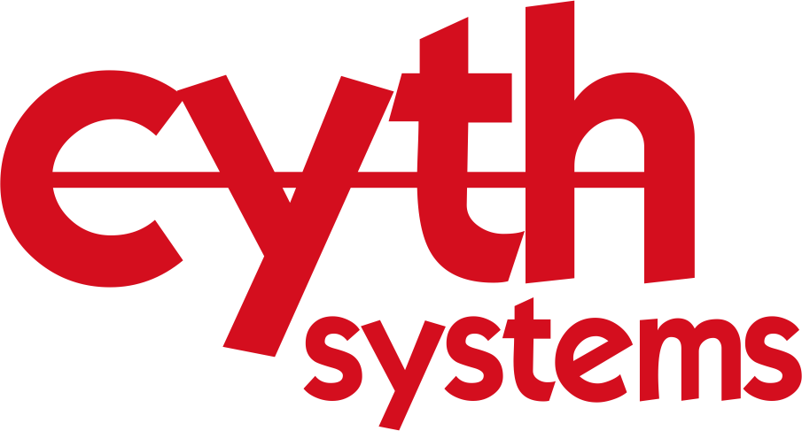

Alan Josué Beas
Programmer
Cyth Systems, Inc.
Experience

Cyth Systems, Inc.
ProgrammerFebruary 2019 - Present
• Develop automatic test equipment functionalities using LabVIEWs best embedded systems practices
• Maintain weekly reports of projects making use of the SCRUM framework to align progress with future weekly goals
• Work closely with clients in order to deliver robust and safety critical systems

UCSD Recreation
IT SpecialistDecember 2017-August 2018 / 8 mos
• Provided technical support, troubleshooting, and solved routine problems regarding use of software
• Developed a web application for UCSD Athletic Trainers to track student-athlete walk-ins and create annual injury reports
• Improved interpersonal skills reporting updates to directors as well as collaborating with other IT staff
Skills
Languages
| • C/C++ | • HTML/CSS | • Java | • JavaScript |
| • SQL | • SystemVerilog | • PHP | • Python |
Tools
| • Git | • Intel Quartus | • ModelSim | • LabVIEW |
| • MATLAB | • Microsoft Office | • SSMS | • Adobe Ps/Ai |
Other
| • AutoCAD | • Bootstrap | • Express JS | • PGP |
Projects
Brain-Computer Interface Game
Team Size: 4January 2018-March 2018
• Using a Neurosky headset to control the game 2048 in hope of being able to play the game hands-free. This project helped us get a grasp on the technology of BCI and how to get brain signals into tangible computer systems
• Link to presentation and live demo (Google Slides, Project Repository)
Elevator System with LabVIEW
Team Size: 3September 2017-December 2017
• Quarter-long project putting together an elevator system from laser-cut plywood, 3D printed parts, an IR sensor, a brushless motor, and servos
• Programmed a state-machine implementation in LabVIEW to complete the elevators level control system
• Link to presentation, implementation, and more images (Google Slides)
Design for Development
Team Size: 8September 2017-December 2017
• Designed a solution for a local non-profit organization that included solar powered security cameras and lights necessary for a garden office
• Focused on efficient human-centered design methods, contextual listening, project management, stakeholder analysis, needs and capacity assessment, and sustainable community development
• Link to Client Design Report (Google Docs)
SHA-256 Implementation with Verilog
Solo ProjectSeptember 2017-December 2017
• Designed a processor that can implement SHA-2 hashing algorithm using SystemVerilog, Intel Quartus and ModelSim
Leg Exoskeleton with Arduino
Team Size: 5January 2017
• Built an inexpensive exoskeleton using Arduino to aid leg movements for potential treatment of paralysis
• Programmed two stepper motors to carefully match the patients EMG muscle sensor signal input in order to smoothly aid the movement of the hip and knee during sitting, standing and walking
• Achieved second place after presenting and showcasing our project to judges for the REACH 24-hour Competition at UCSD
Education
Universidad Complutense de Madrid, Spain
Study Abroad ProgramAugust 2018-January 2019
• Acquired new world perspectives and cross-cultural skills
• Improved interpersonal skills and obtained life-long connections
• Studied diverse world topics in order to become a contributor to the world's social, political, economic and technological developments
University of California, San Diego
B.S. Computer EngineeringSeptember 2014-March 2018
• Collaborated on innovative projects applying advanced tools and technologies to engineering solutions
• Explored the theory behind technological systems and what can be done to make them smarter and more efficient
• Bridged hardware and software by designing digital processing systems in the class setting
Certifications
National Instruments
Certified LabVIEW Developer (CLD)
December 2017
Certified LabVIEW Associate Develper (CLAD)
December 2019


Activities
| • Running | • Traveling | • Sports |
| • Photography | • Music | • Design |
| • Dancing | • Reading | • Coding |